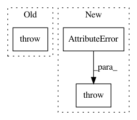

c6eea03c8db29b1d8aee492246b9a4135ddee7c5,keras/engine/topology.py,Layer,output_shape,#Layer#,836
Before Change
or if all inbound nodes have the same output shape.
"""
if not self.inbound_nodes:
raise Exception("The layer has never been called " +
"and thus has no defined output shape.")
all_output_shapes = set([str(node.output_shapes) for node in self.inbound_nodes])
if len(all_output_shapes) == 1:
output_shapes = self.inbound_nodes[0].output_shapes
if len(output_shapes) == 1:
After Change
or if all inbound nodes have the same output shape.
"""
if not self.inbound_nodes:
raise AttributeError("The layer has never been called "
"and thus has no defined output shape.")
all_output_shapes = set([str(node.output_shapes) for node in self.inbound_nodes])
if len(all_output_shapes) == 1:
output_shapes = self.inbound_nodes[0].output_shapes
if len(output_shapes) == 1:
In pattern: SUPERPATTERN
Frequency: 4
Non-data size: 3
Instances
Project Name: keras-team/keras
Commit Name: c6eea03c8db29b1d8aee492246b9a4135ddee7c5
Time: 2016-12-14
Author: francois.chollet@gmail.com
File Name: keras/engine/topology.py
Class Name: Layer
Method Name: output_shape
Project Name: ray-project/ray
Commit Name: 1f54acd27488f089f3211c08aef5d9927183d1c6
Time: 2020-08-23
Author: rkooo567@gmail.com
File Name: python/ray/actor.py
Class Name: ActorHandle
Method Name: __getattr__
Project Name: keras-team/keras
Commit Name: c6eea03c8db29b1d8aee492246b9a4135ddee7c5
Time: 2016-12-14
Author: francois.chollet@gmail.com
File Name: keras/engine/topology.py
Class Name: Layer
Method Name: input_shape
Project Name: tensorlayer/tensorlayer
Commit Name: 417c082cafff43baa996ef21a614dcc9ad524393
Time: 2019-06-06
Author: jingqing.zhang15@imperial.ac.uk
File Name: tensorlayer/layers/recurrent.py
Class Name:
Method Name: target_mask_op